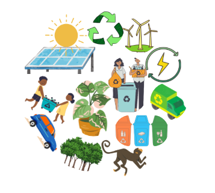

Início
Curiosidades
Maquete
Calculadora

Minha conta
Nome:
{{ usuario.nome }}
E-mail:
{{ email }}
Desde:
{{ usuario.data_cadastro.strftime('%d/%m/%Y') if usuario and usuario.data_cadastro else '' }}
Ver minha calculadora
Ir para o quiz
Sair